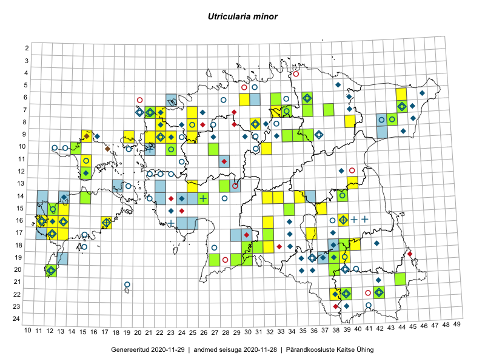

Utricularia minor — väike vesihernes
Lentibulariaceae :: Utricularia minor L. (189)

Kaart põhineb 254 kirjel:
vaatlusi 91
herbaareksemplare 98
PKÜ kirjeid1 2
ELFi kirjeid2 63
Taime kaasaegsed ja ajaloolised leiukohad asuvad 123 ruudus.
Tingmärgid ja ruutude arvud periooditi (U3 / V4 )
█ 2006–2020 (80/–)
◆/◇ 1971–2005 (31/57)
○ 1921–1970 (42/29)
+ kuni 1920 (7/0)
× hävinud (–/0)
? kaheldav (–/0)
| Ruut | Leidja(d) | Leiuaeg | Kirje |
|---|---|---|---|
| 10-12 | Haide-Ene Rebassoo | 1957–1984 | ruut/ala: Utricularia minor L. |
| 10-13 | Haide-Ene Rebassoo | 1957–1984 | ruut/ala: Utricularia minor L. |
| 11-15 | Haide-Ene Rebassoo | 1957–1984 | ruut/ala: Utricularia minor L. |
| 12-15 | Taavi Tuulik | 1984–1986 | ruut/ala: Utricularia minor L. |
| 14-39 | H. Salasoo | 1934–1935 | ruut/ala: Utricularia minor L. |
| 07-21 | botaaniline ekspeditsioon ZBI | 1981-06-30 | ruut/ala: Utricularia minor L. |
| 08-25 | H. Krall | 1968-06-17–1971-07-07 | ruut/ala: Utricularia minor L. |
| 09-22 | K. Kalamees, M. Kask | 1952-06-23–1955-08-08 | ruut/ala: Utricularia minor L. |
| 08-31 | J. Luuts | 1938 | ruut/ala: Utricularia minor L. |
| 09-23 | botaaniline ekspeditsioon ZBI | 1983-07-10 | ruut/ala: Utricularia minor L. |
| 16-40 | Glehn | 1860–1938 | ruut/ala: Utricularia minor L. |
| 09-31 | J. Lunts | 1938 | ruut/ala: Utricularia minor L. |
| 09-37 | J. Talts | 1935-07-26–1936-08-03 | ruut/ala: Utricularia minor L. |
| 10-19 | H. Krall | 1952-09 | ruut/ala: Utricularia minor L. |
| 10-23 | H. Kurm (Krall) | 1952-07-10–1952-08-09 | ruut/ala: Utricularia minor L. |
| 13-19 | A. Tomson | 1934 | ruut/ala: Utricularia minor L. |
| 12-21 | E. Sits | 1934 | ruut/ala: Utricularia minor L. |
| 12-23 | E. Sits | 1934–1936 | ruut/ala: Utricularia minor L. |
| 12-22 | E. Sits | 1934 | ruut/ala: Utricularia minor L. |
| 14-13 | Mari Reitalu | 1990–1998 | ruut/ala: Utricularia minor L. |
| 14-24 | Maria Abakumova, L. Viljasoo | 1982-07-31–1982-08-02 | ruut/ala: Utricularia minor L. |
| 14-28 | L. Tehver | 1949-07 | ruut/ala: Utricularia minor L. |
| 16-12 | Mari Reitalu | 1971–2005 | ruut/ala: Utricularia minor L. |
| 05-31 | J. Eplik | 1935 | ruut/ala: Utricularia minor L. |
| 17-12 | M. Reitalu | 1971 | ruut/ala: Utricularia minor L. |
| 20-12 | A. Tomson | 1934 | ruut/ala: Utricularia minor L. |
| 07-20 | O. Eklund | 1935-07–1935-08 | ruut/ala: Utricularia minor L. |
| 21-19 | Julius Gröntved | 1929 | ruut/ala: Utricularia minor L. |
| 16-32 | Tõnu Feldmann, Katrit Karus | 2015-07-31 | ruut/ala: Utricularia minor L. |
| 09-34 | Jana-Maria Habicht, Ester Valdvee, Kirke Pilvik | 2015-07-25–2015-07-26 | ruut/ala: Utricularia minor L. |
| 09-36 | Jana-Maria Habicht, Ester Valdvee, Tiiu Liimets | 2015-07-07 | ruut/ala: Utricularia minor L. |
| 14-32 | Maria Abakumova, Helle Mäemets | 2015-07-01 | ruut/ala: Utricularia minor L. |
| 17-12 | Mari Reitalu | 2015-08-13 | ruut/ala: Utricularia minor L. |
| 17-12 | Mari Reitalu | 2015-08-13 | ruut/ala: Utricularia minor L. |
| 15-12 | Mari Reitalu, Oliver Parrest | 2015-07-21 | ruut/ala: Utricularia minor L. |
| 16-13 | Mari Reitalu, Oliver Parrest | 2015-07-27 | ruut/ala: Utricularia minor L. |
| 15-12 | Mari Reitalu, Oliver Parrest | 2015-06-21 | ruut/ala: Utricularia minor L. |
| 09-35 | Kadi Palmik, Helle Mäemets | 2015-07-21 | ruut/ala: Utricularia minor L. |
| 17-36 | Helle Mäemets, Mare Leis, Malle Timm | 2015-06-25 | ruut/ala: Utricularia minor L. |
| 15-37 | Helle Mäemets, Mare Leis, Jaak-Albert Metsoja | 2015-07-07 | ruut/ala: Utricularia minor L. |
| 09-35 | Jana-Maria Habicht, Ester Valdvee, Tiiu Liimets | 2015-07-07 | ruut/ala: Utricularia minor L. |
| 09-25 | Thea Kull, Oliver Parrest | 2016-07-06 | ruut/ala: Utricularia minor L. |
| 08-22 | Mari Reitalu, Eerik Leibak | 2016-07-07 | ruut/ala: Utricularia minor L. |
| 08-22 | Mari Reitalu, Eerik Leibak | 2016-07-07 | ruut/ala: Utricularia minor L. |
| 07-22 | Mari Reitalu, Eerik Leibak | 2016-07-07–2016-07-10 | ruut/ala: Utricularia minor L. |
| 07-22 | Mari Reitalu, Triin Reitalu, Sirje Azarov | 2016-07-08 | ruut/ala: Utricularia minor L. |
| 08-25 | Helle Mäemets, Tiina Elvisto | 2016-07-05 | ruut/ala: Utricularia minor L. |
| 16-11 | Mari Reitalu, Triin Reitalu | 2016-06-02 | ruut/ala: Utricularia minor L. |
| 07-25 | Helle Mäemets, Tiina Elvisto | 2016-07-05 | ruut/ala: Utricularia minor L. |
| 07-25 | Helle Mäemets, Tiina Elvisto | 2016-07-05 | ruut/ala: Utricularia minor L. |
| 16-17 | Peedu Saar, Ott Luuk | 2016-09-01 | ruut/ala: Utricularia minor L. |
| 09-36 | Ott Luuk | 2016-08-11 | ruut/ala: Utricularia minor L. |
| 15-12 | Toomas Kukk, Meeli Mesipuu | 2016-10-08 | ruut/ala: Utricularia minor L. |
| 16-17 | Ott Luuk, Peedu Saar | 2016-09-01 | ruut/ala: Utricularia minor L. |
| 14-33 | Ott Luuk, Indrek Tammekänd | 2016-07-21 | ruut/ala: Utricularia minor L. |
| 13-25 | Peedu Saar, Timo Luhamäe, Johannes Kõdar | 2016-07-05 | ruut/ala: Utricularia minor L. |
| 16-12 | Mari Reitalu | 2012-09-11 | ruut/ala: Utricularia minor L. |
| 13-28 | Thea Kull, Tiit Hallikma | 2016-07-08 | ruut/ala: Utricularia minor L. |
| 15-34 | Maria Abakumova, Helle Mäemets | 2015-07-30 | ruut/ala: Utricularia minor L. |
| 16-39 | Thea Kull, Ott Luuk | 2017-08-01 | ruut/ala: Utricularia minor L. |
| 18-31 | Toomas Kukk, Ott Luuk, Kersti Tambets, Timo Luhamäe, Sten Mander | 2017-08-29 | ruut/ala: Utricularia minor L. |
| 19-29 | Toomas Kukk, Ott Luuk, Kersti Tambets, Timo Luhamäe, Sten Mander | 2017-08-29 | ruut/ala: Utricularia minor L. |
| 11-15 | Peedu Saar, Ott Luuk | 2017-09-13 | ruut/ala: Utricularia minor L. |
| 10-14 | Ott Luuk, Peedu Saar | 2017-09-14 | ruut/ala: Utricularia minor L. |
| 10-32 | Tõnu Feldmann, Katrit Karus | 2017-07-05 | ruut/ala: Utricularia minor L. |
| 06-45 | Tõnu Feldmann, Katrit Karus | 2017-07-06 | ruut/ala: Utricularia minor L. |
| 08-40 | Peedu Saar, Ott Luuk | 2017-07-18 | ruut/ala: Utricularia minor L. |
| 14-35 | Peedu Saar | 2017-08-15–2017-09-16 | ruut/ala: Utricularia minor L. |
| 14-35 | Peedu Saar | 2017-08-16 | ruut/ala: Utricularia minor L. |
| 15-37 | Peedu Saar | 2017-08-03 | ruut/ala: Utricularia minor L. |
| 15-37 | Peedu Saar | 2017-08-03–2017-08-04 | ruut/ala: Utricularia minor L. |
| 08-31 | Helle Mäemets, Kadi Palmik | 2017-08-03 | ruut/ala: Utricularia minor L. |
| 09-25 | Helle Mäemets, Kadi Palmik | 2017-07-16 | ruut/ala: Utricularia minor L. |
| 08-25 | Helle Mäemets, Kadi Palmik | 2017-07-14 | ruut/ala: Utricularia minor L. |
| 07-22 | Helle Mäemets, Kadi Palmik | 2017-07-15 | ruut/ala: Utricularia minor L. |
| 18-40 | Helle Mäemets, Kadi Palmik | 2017-07-05 | ruut/ala: Utricularia minor L. |
| 16-39 | Ott Luuk, Thea Kull | 2017-08-01 | ruut/ala: Utricularia minor L. |
| 08-40 | Ott Luuk, Peedu Saar | 2017-07-18 | ruut/ala: Utricularia minor L. |
| 20-12 | Sirje Azarov, Mari Reitalu | 2018-07-12 | ruut/ala: Utricularia minor L. |
| 20-12 | Sirje Azarov, Mari Reitalu | 2018-07-23 | ruut/ala: Utricularia minor L. |
| 09-23 | Mari Reitalu | 2014-07-10 | ruut/ala: Utricularia minor L. |
| 15-13 | Mari Reitalu, Sirje Azarov | 2019-08-31 | ruut/ala: Utricularia minor L. |
| 08-44 | Thea Kull, Toomas Kukk | 2019-09-12 | ruut/ala: Utricularia minor L. |
| 08-25 | Peedu Saar, Ott Luuk | 2019-09-05 | ruut/ala: Utricularia minor L. |
| 16-12 | Sirje Azarov, Mari Reitalu | 2019-08-06 | ruut/ala: Utricularia minor L. |
| 08-25 | Ott Luuk, Peedu Saar | 2019-09-05 | ruut/ala: Utricularia minor L. |
| 09-22 | Ott Luuk | 2019-09-03 | ruut/ala: Utricularia minor L. |
| 09-22 | Ott Luuk | 2019-09-03–2019-09-04 | ruut/ala: Utricularia minor L. |
| 07-33 | Ott Luuk, Jaak-Albert Metsoja | 2019-08-08 | ruut/ala: Utricularia minor L. |
| 07-33 | Ott Luuk, Jaak-Albert Metsoja | 2019-08-08 | ruut/ala: Utricularia minor L. |
| 14-15 | Helle Mäemets | 2019-07-03 | ruut/ala: Utricularia minor L. |
| 16-11 | Elsa Pastak | 1932-07-03 | TU269607: Utricularia minor L. |
| 08-27 | Paul William Thomson | 1923-07-09 | TAM0051931: Utricularia minor L. |
| 16-11 | Hugo Sogenbits | 1929-06-09 | TAM0051932: Utricularia minor L. |
| 14-39 | Hugo Salasoo | 1931-07-05 | TAM0051933: Utricularia minor L. |
| 06-28 | Hugo Salasoo | 1937-08-22 | TAM0051934: Utricularia minor L. |
| 20-12 | Uve Ramst | 1988-06-19 | TAM0023897: Utricularia minor L. |
| 16-11 | Elsa Pastak | 1932-07-03 | TAM0065288: Utricularia minor L. |
| 16-11 | Elsa Pastak | 1932-07-03 | TAM0088907: Utricularia minor L. |
| 08-33 | Julius Lunts | 1932 | TAM0089050: Utricularia minor L. |
| 14-21 | V. Puusepp | 1962-06-17 | TAA0085665: Utricularia minor L. |
| 16-11 | A. Roos | 1973-06-26 | TAA0085666: Utricularia minor L. |
| 16-11 | A. Roos | 1973-06-26 | TAA0085667: Utricularia minor L. |
| 05-31 | Gustav Vilbaste | 1922-07-20 | TAA0085668: Utricularia minor L. |
| 05-31 | Gustav Vilbaste | 1922-08-28 | TAA0085669: Utricularia minor L. |
| 11-24 | Gustav Vilbaste | 1934-07-20 | TAA0085670: Utricularia minor L. |
| 09-24 | Gustav Vilbaste | 1932-07-16 | TAA0085671: Utricularia minor L. |
| 07-21 | Heljo Krall | 1981-07-01 | TAA0085672: Utricularia minor L. |
| 20-40 | S. Talts, Vilma Kuusk | 1960-06-21 | TAA0085673: Utricularia minor L. |
| 22-42 | T. Timm | 1955-07-03 | TAA0085675: Utricularia minor L. |
| 16-13 | Linda Viljasoo | 1966-07-10 | TAA0085676: Utricularia minor L. |
| 10-12 | Haide-Ene Rebassoo | 1960-06-21 | TAA0085678: Utricularia minor L. |
| 09-30 | Tiiu Kull | 2005-07-09 | TAA0085679: Utricularia minor L. |
| 10-31 | Liivia Laasimer | 1956-08-09 | TAA0085680: Utricularia minor L. |
| 16-12 | Liivia Laasimer | 1972-07-23 | TAA0085681: Utricularia minor L. |
| 16-11 | J. Talts | 1929-06-09 | TAA0085682: Utricularia minor L. |
| 16-13 | Vilma Kuusk | 1973-06-27 | TAA0085683: Utricularia minor L. |
| 07-21 | M. Simson, A. Ojaveer, T. Sütt | 1960-07-12 | TAA0085684: Utricularia minor L. |
| 19-36 | V. Kõvask, V. Puusepp | 1957-08-24 | TAA0085685: Utricularia minor L. |
| 20-39 | A. Mäemets | 1961-08 | TAA0085687: Utricularia minor L. |
| 10-21 | P. Glehn | TAM0099412: Utricularia minor L. | |
| 14-26 | J. Treboux | 1861–1915 | TAM0105449: Utricularia minor L. |
| 09-34 | Jana-Maria Habicht | 2015-07-25 | TAM0118106: Utricularia minor L. |
| 09-35 | Jana-Maria Habicht | 2015-07-07 | TAM0119817: Utricularia minor L. |
| 09-36 | Jana-Maria Habicht | 2015-07-07 | TAM0120174: Utricularia minor L. |
| 22-39 | Jana-Maria Habicht | 2014-07-30 | TAM0122518: Utricularia minor L. |
| 10-14 | Jana-Maria Habicht | 2015-07-11 | TAM0122519: Utricularia minor L. |
| 21-44 | Peedu Saar, Karin Kikas | 2016-08-18 | TAA0134041: Utricularia minor L. |
| 10-27 | Peedu Saar, Timo Luhamäe, Johannes Kõdar | 2016-07-06 | TAA0134042: Utricularia minor L. |
| 07-38 | Liina Oja, Eerik Leibak | 2016-07-28 | TAA0136363: Utricularia minor L. |
| 15-12 | Toomas Kukk, Meeli Mesipuu | 2016-10-08 | TAA0135723: Utricularia minor L. |
| 06-33 | Toomas Kukk, Peedu Saar | 2016-09-14 | TAA0136238: Utricularia minor L. |
| 12-15 | Toomas Kukk, Meeli Mesipuu | 2016-08-10 | TAA0137051: Utricularia minor L. |
| 20-12 | Mari Reitalu, Sirje Azarov | 2016-08-08 | TAA0137670: Utricularia minor L. |
| 19-38 | Eeva-Maria Jeletsky, Tarmo Niitla | 2015-08-12 | TAA0119081: Utricularia minor L. |
| 18-30 | Ott Luuk | 2016-07-19 | TAA0138022: Utricularia minor L. |
| 19-27 | Ott Luuk, Hannes Pehlak | 2016-07-18 | TAA0138886: Utricularia minor L. |
| 17-32 | Toomas Kukk, Eerik Leibak | 2016-07-20 | TAA0139472: Utricularia minor L. |
| 07-36 | Thea Kull, Timo Luhamäe | 2016-07-27 | TAA0139388: Utricularia minor L. |
| 13-28 | Thea Kull, Tiit Hallikma | 2016-07-06 | TAA0139409: Utricularia minor L. |
| 15-34 | Maria Abakumova, Helle Mäemets | 2015-07-30 | TAA0119527: Utricularia minor L. |
| 14-39 | Peedu Saar | 2017-07-26 | TAA0141069: Utricularia minor L. |
| 20-38 | Peedu Saar, Ott Luuk | 2017-07-25 | TAA0141070: Utricularia minor L. |
| 19-29 | Toomas Kukk | 2017-08-29 | TAA0141832: Utricularia minor L. |
| 19-29 | Toomas Kukk | 2017-08-29 | TAA0141833: Utricularia minor L. |
| 18-38 | Helle Mäemets | 2003-08-08 | TAA2002213: Utricularia minor L. |
| 14-26 | Kai Vellak | 2018-06-14 | TU284671: Utricularia minor L. |
| 18-31 | Ott Luuk | 2017-08-29 | TAA0142936: Utricularia minor L. |
| 17-12 | Stange | 1927-07-10 | TAA0118024: Utricularia minor L. |
| 22-42 | Toomas Kukk | 2018-07-18 | TAA0146524: Utricularia minor L. |
| 17-34 | Helle Mäemets | 1998-07-17 | TAA2002861: Utricularia minor L. |
| 19-30 | Indrek Tammekänd | 2018-07-15 | TAA0147780: Utricularia minor L. |
| 22-38 | Helle Mäemets | 2001-07-20 | TAA2003285: Utricularia minor L. |
| 22-42 | Helle Mäemets | 2002-06-19 | TAA2003417: Utricularia minor L. |
| 19-36 | Aime Mäemets | 1973-08-20 | TAA2003747.A: Utricularia minor L. |
| 22-39 | Helle Mäemets | 2001-07-27 | TAA2003751: Utricularia minor L. |
| 22-39 | Helle Mäemets | 2001-07-05 | TAA2003754.B: Utricularia minor L. |
| 22-39 | Helle Mäemets | 2001-07-27 | TAA2003758: Utricularia minor L. |
| 19-37 | Helle Mäemets | 2004-07-09 | TAA2003761: Utricularia minor L. |
| 07-22 | Helle Mäemets | 2003-07-29 | TAA2003767: Utricularia minor L. |
| 20-39 | Aime Mäemets | 1961-08-20 | TAA2003808.B: Utricularia minor L. |
| 15-23 | Aime Mäemets | 1977-07-07 | TAA2003811: Utricularia minor L. |
| 09-33 | Aare Mäemets | 1972-07-08 | TAA2003818: Utricularia minor L. |
| 20-36 | Aime Mäemets | 1986-07-01 | TAA2003825: Utricularia minor L. |
| 08-44 | K. Eichwald | 1932-06-14 | TU381709: Utricularia minor L. |
| 16-11 | Elsa Pastak | 1932-07-03 | TU381716: Utricularia minor L. |
| 17-15 | E. Lellep | 1962-07-14 | TU381719: Utricularia minor L. |
| 06-36 | Peedu Saar, Timo Luhamäe | 2019-08-07 | TAA0149488: Utricularia minor L. |
| 07-21 | Peedu Saar | 2019-07-25 | TAA0149494: Utricularia minor L. |
| 22-39 | Peedu Saar, Timo Luhamäe | 2019-07-10 | TAA0149500: Utricularia minor L. |
| 18-39 | Thea Kull | 2019-07-25 | TAA0150722: Utricularia minor L. |
| 08-44 | Toomas Kukk, Thea Kull | 2019-09-12 | TAA0148520: Utricularia minor L. |
| 07-34 | Toomas Kukk, Rein Kalamees, Kaur Maran | 2019-08-07 | TAA0148669: Utricularia minor L. |
| 16-17 | Sengbusch | TAM0099411: Utricularia minor L. | |
| 16-41 | Th. Frese | 1857-08 | TAM0099414: Utricularia minor L. |
| 16-39 | Th. Bienert, P. v. Glehn | 1857-07-01 | TU381703: Utricularia minor L. |
| 16-11 | A. Vaga | 1933-07-02 | TU381704: Utricularia minor L. |
| 07-26 | M. Rohtmets | 1976-08-09 | TU381705: Utricularia minor L. |
| 16-39 | H. Hiir | 1880-06 | TU381707: Utricularia minor L. |
| 16-39 | Veronika Tjumentseva | 1978-07-01 | TU381708: Utricularia minor L. |
| 16-38 | M. Tammert | 1964-07-13 | TU381710: Utricularia minor L. |
| 18-27 | Saarson | 1924-07-24 | TU381711: Utricularia minor L. |
| 18-27 | Saarson | 1924-07-24 | TU381712: Utricularia minor L. |
| 23-41 | E. Saarson | 1922-06-29 | TU381713: Utricularia minor L. |
| 16-39 | Fomin | 1897-06-16 | TU381714: Utricularia minor L. |
| 08-43 | E. Tammemägi | 1962-08-05 | TU381715: Utricularia minor L. |
| 16-11 | K. Eichwald | 1931-07-21 | TU381717: Utricularia minor L. |
| 15-12 | K. Eichwald | 1929-08-23 | TU381718: Utricularia minor L. |
| 16-23 | 1907-07-21 | TU381720: Utricularia minor L. | |
| 16-17 | Ülle Püttsepp, Eerik Leibak, Lauri Lutsar | 1997-06-06 | ELF: 97 |
| 10-17;10-18 | Jaanus Paal, Aino Kalda, Eli Fremstad, Asbjørn Moen | 1997-06-19 | ELF: 611 |
| 12-15 | Jaanus Paal, Aino Kalda, Eli Fremstad | 1997-06-20 | ELF: 608 |
| 05-39 | Tõnu Ploompuu | 1994-08-05 | ELF: 968 |
| 08-29 | Arne Kivistik | 1997-06-16 | ELF: 2162 |
| 08-29 | Arne Kivistik | 1997-07-11 | ELF: 1049 |
| 06-30;07-30 | Arne Kivistik | 1997-06-12 | ELF: 1208 |
| 07-29 | Arne Kivistik | 1997-06-15 | ELF: 1209 |
| 09-22 | Eerik Leibak, Agu Leivits | 2001-08-16 | ELF: 2402 |
| 08-30;09-30 | Arne Kivistik | 1997-06-20 | ELF: 934 |
| 09-15 | Ülle Püttsepp, Tarmo Niitla, Erki Uustalu | 1995-08-11 | ELF: 3172 |
| 16-17 | Toomas Kukk, Hannes Pehlak | 2001-07-18 | ELF: 9933 |
| 16-11 | Mari Reitalu | 2009-09-11 | ELF: 11210 |
| 11-28 | Toivo Sepp | 2009-08-27 | ELF: 10314 |
| 13-22 | Heidi Öövel, Tiit Hallikma | 2010-09-01 | ELF: 15958 |
| 14-22 | Heidi Öövel, Tiit Hallikma | 2010-09-04 | ELF: 15973 |
| 16-11 | Mari Reitalu | 2010-06-16 | ELF: 16224 |
| 16-11 | Mari Reitalu | 2010-06-16 | ELF: 16225 |
| 16-11 | Mari Reitalu | 2010-06-21 | ELF: 16235 |
| 16-11 | Mari Reitalu | 2010-06-21 | ELF: 16238 |
| 16-12 | Mari Reitalu | 2010-06-06 | ELF: 16251 |
| 17-12 | Mari Reitalu | 2010-06-14 | ELF: 16270 |
| 17-12 | Mari Reitalu | 2010-06-14 | ELF: 16271 |
| 17-11 | Mari Reitalu | 2010-06-26 | ELF: 16284 |
| 17-11 | Mari Reitalu | 2010-06-26 | ELF: 16286 |
| 14-11 | Mari Reitalu | 2010-08-01 | ELF: 16389 |
| 15-11 | Mari Reitalu | 2010-08-01 | ELF: 16392 |
| 15-12 | Mari Reitalu | 2010-09-09 | ELF: 16488 |
| 15-12 | Mari Reitalu | 2010-09-09 | ELF: 16489 |
| 15-12 | Mari Reitalu | 2010-09-09 | ELF: 16492 |
| 19-13 | Oliver Parrest | 2010-09-25 | ELF: 16763 |
| 15-12 | Mari Reitalu | 2010-09-28 | ELF: 17070 |
| 09-15 | Liina Remm | 2010-07-11 | ELF: 17255 |
| 09-15 | Liina Remm | 2010-07-11 | ELF: 17256 |
| 10-21 | Tõnu Ploompuu | 2010-08-20 | ELF: 17860 |
| 15-13 | Rein Nellis, Raul Melsas | 2010-07-20 | ELF: 2564 |
| 13-18 | Meeli Mesipuu | 2010-05-31 | ELF: 18270 |
| 14-24 | Maria Knüpffer, Mariliis Võsu | 2010-07-27 | ELF: 3510 |
| 15-12 | Mari Reitalu | 2010-09-15 | ELF: 19537 |
| 15-13 | Rein Nellis, Raul Melsas | 2010-07-20 | ELF: 20921 |
| 14-13 | Rein Nellis, Raul Melsas | 2010-07-26 | ELF: 20940 |
| 08-22 | Liis Multer, Kuldar Pärn | 2010-08-26 | ELF: 21093 |
| 06-23 | Helena Tammik, Egle Puusepp | 2010-08-08 | ELF: 21387 |
| 16-25 | Marika Kose, Ülle Valgi | 2010-10-17 | ELF: 21634 |
| 16-24 | Marika Kose, Ülle Valgi | 2010-10-22 | ELF: 21639 |
| 14-25 | Maria Knüpffer, Meelis Leivits | 2010-07-06 | ELF: 21786 |
| 13-29 | Meelis Leivits | 2010-09-01 | ELF: 21819 |
| 14-36 | Meelis Leivits | 2010-06-17 | ELF: 22042 |
| 14-36 | Meelis Leivits | 2010-06-17 | ELF: 22043 |
| 14-36 | Meelis Leivits | 2010-06-17 | ELF: 22045 |
| 15-37 | Meelis Leivits | 2010-06-11 | ELF: 22072 |
| 15-37 | Meelis Leivits | 2010-06-11 | ELF: 22073 |
| 19-37 | Anneli Palo, Madli Linder | 2006-09-14 | ELF: 14632 |
| 08-43;09-43 | Alar Soppe | 2012-06-20 | ELF: 775 |
| 09-43 | Alar Soppe | 2012-06-20 | ELF: 23413 |
| 14-11 | Mari Reitalu | 2012-08-18 | ELF: 29 |
| 14-11 | Mari Reitalu | 2012-08-18 | ELF: 23978 |
| 14-13 | Mari Reitalu | 2012-08-21 | ELF: 1307 |
| 15-12 | Mari Reitalu | 2012-09-04 | ELF: 24000 |
| 15-11 | Mari Reitalu | 2012-09-04 | ELF: 1311 |
| 15-11;16-11 | Mari Reitalu | 2012-09-04 | ELF: 1310 |
| 15-11 | Mari Reitalu | 2012-09-04 | ELF: 24003 |
| 15-11 | Mari Reitalu | 2012-09-04 | ELF: 24004 |
| 16-17 | 2001-07-18 | PKÜ: 7824 | |
| 07-20 | 1998-07-29 | PKÜ: 4395 |
Pärandkoosluste Kaitse Ühingu (PKÜ) andmebaas sisaldab inventeeritud koosluste kirjeldusi ja liigiloendeid. Kõige enam on andmeid niidutaimede kohta.↩︎
Eestimaa Looduse Fondi (ELF) andmebaas sisaldab inventeeritud koosluste kirjeldusi ja liigiloendeid. Eriti rohkesti on andmeid märgalade kohta.↩︎
Ruutude arv uue atlase andmekogu järgi. Muuhulgas arvestab vanemat herbaariumi, 2005. aasta atlase välitöölehtedelt uuesti digitaliseeritud andmeid jne. Uue atlase andmekogust pärinevad andmed on kaardile kantud siniste sümbolitega.↩︎
Ruutude arv 2005. aasta atlase (Kukk, T., Kull, T., Eesti taimede levikuatlas. Eesti Maaülikool, Põllumajandus- ja Keskkonnainstituut, Tartu, 2005) järgi. Andmeallikana on kasutatud levik.exe programmi, kus igas ruudus on registreeritud vaid uusim leid. Seetõttu on vanemate perioodide kohta andmed puudulikud. Kasutatud levik.exe andmestikus leidub mõningaid kõrvalekaldeid atlase trükis ilmunud versioonist, sagedamini tarnade ja käpaliste seas. Lisaks leidub selles andmestikus valik liike (peamiselt väheste leidudega tulnuktaimed), mille kaarte trükis ei avaldatud. Vana atlase andmed ruutudest, milles ei ole uue atlase andmekogus leide enne 2006. aastat, on kaardil esitatud punaste sümbolitega. Vana atlase andmetel hävinud ja kaheldavaid leiukohti pole hilisemate (taas)leidude põhjal korrigeeritud.↩︎